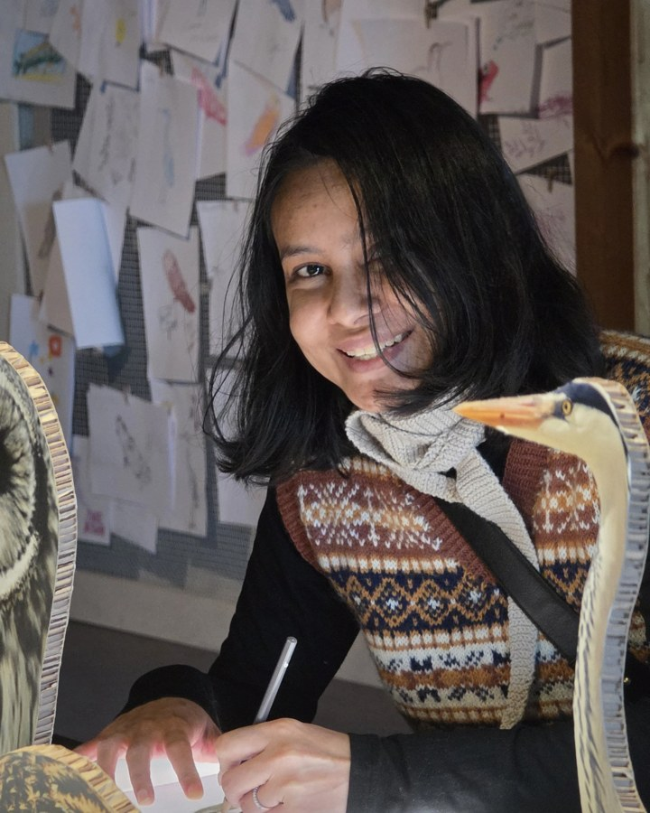
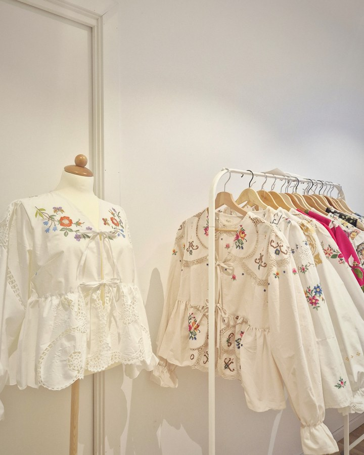
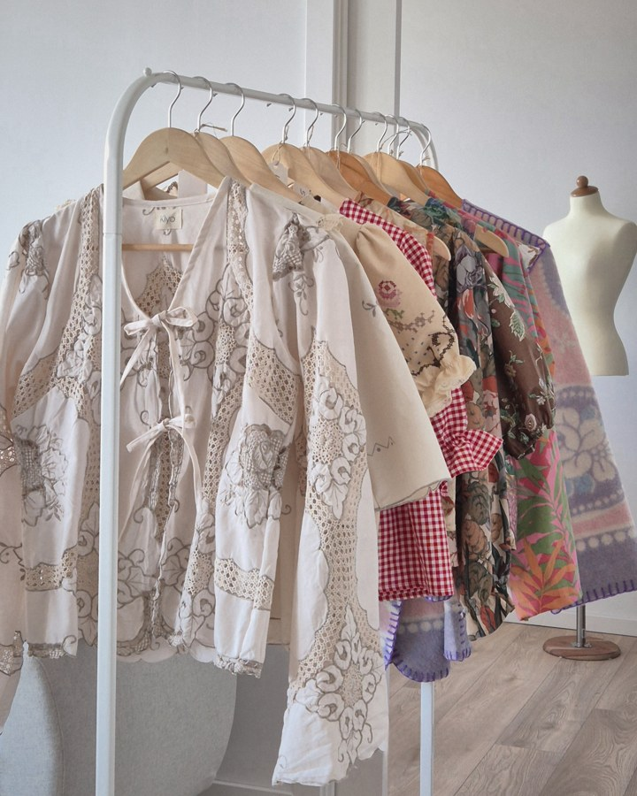

Klyo
Gi eksisterende materialer nytt liv
Kulani Premadasa redesigner duker, gardiner og overskuddsmaterialer til nye plagg. Hun startet i Sri Lanka i 2019 – og startet på nytt i Norge.
Fra Sri Lanka til Norge
Kulani har studert Fashion Design and Product Development, og hun har en bachelorgrad med utmerkelse i motedesign fra University of Moratuwa i Sri Lanka.
Hun startet sin første virksomhet i Sri Lanka i 2019. Etter at hun flyttet til Norge i 2022, startet hun på nytt og ga merket navnet Klyo.
Klyo lager plagg av tekstiler som allerede finnes. Plaggene selges via Instagram, på Tise og på markeder i Oslo og Hamar.


Visjonen
«Jeg ønsker å vise at vi kan skape vakre og unike plagg av materialer som allerede finnes.»
— Kulani Premadasa, Klyo
Fem spørsmål til Kulani
Svarene er Kulanis egne, skriftlige svar til AVANT.
- AVANTKan du fortelle litt om deg selv og bakgrunnen din?
- Kulani«Jeg har studert Fashion Design and Product Development og har alltid hatt stor interesse for mote og kreativitet. Jeg startet min egen virksomhet i Sri Lanka i 2019. Etter at jeg flyttet til Norge i 2022, startet jeg på nytt og rebrandet virksomheten til Klyo. Det har vært en spennende, men krevende reise, med mange utfordringer og nye muligheter.»
- AVANTHvorfor ville du starte Klyo?
- Kulani«Jeg ønsket å kombinere lidenskapen min for design med et ønske om å bidra positivt til miljøet. Gjennom Klyo redesigner jeg tekstiler som duker, gardiner og overskuddsmaterialer til unike plagg. Målet er å redusere tekstilavfall og gi eksisterende materialer nytt liv.»
- AVANTHva er visjonen for Klyo?
- Kulani«Visjonen min er å bidra til en mer bærekraftig moteindustri med minst mulig tekstilsvinn. Jeg ønsker å vise at vi kan skape vakre og unike plagg av materialer som allerede finnes.»
- AVANTHvilke planer har du fremover?
- Kulani«Jeg ønsker å utvikle Klyo videre, skape flere unike design og nå ut til flere kunder. Målet er å vokse som merkevare og inspirere flere til å velge redesign og mer bærekraftig mote.»
- AVANTHar du et råd til andre som vil gjøre det samme?
- Kulani«Tro på ideen din, vær tålmodig og ikke gi opp når det blir utfordrende. Alt trenger ikke å være perfekt fra starten. Start med det du har, lær underveis og jobb videre mot drømmen din. Lidenskap og hardt arbeid kan ta deg langt.»


Hennes råd
«Lidenskap og hardt arbeid kan ta deg langt.»
Kulani Premadasa
Takeaways – fire ting vi tok med oss
- Start med det du har.Alt trenger ikke være perfekt fra starten. Lær underveis.
- Se verdien i det som finnes.Duker, gardiner og overskuddsstoff kan bli nye plagg.
- Det går an å starte på nytt.Kulani bygde merket opp igjen etter flyttingen fra Sri Lanka til Norge.
- Vær tålmodig.Ikke gi opp når det blir utfordrende.
Video: Klyo / Kulani Premadasa
- Merke
- Klyo.no by Premadasa
- Designer
- Kulani Premadasa
- Tekst
- AVANT · intervjusvar av Kulani Premadasa
- Foto og video
- Klyo / Kulani Premadasa
- Utgave
- Featured Edit 01 · Høst 2026